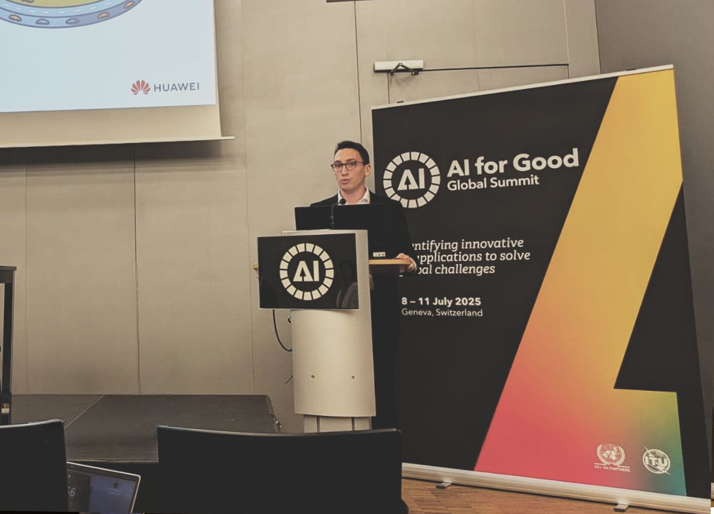
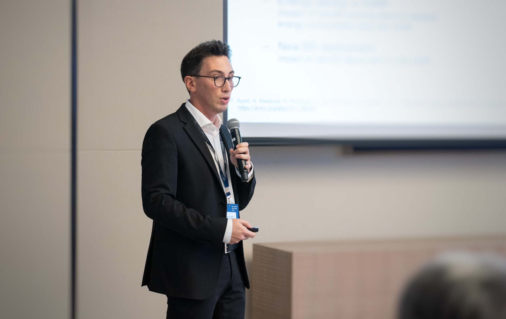

Introducing the AI Agents for RAN Challenge: From Diagnosis to Optimization
Upcoming
AI for Good
AI for Good
3rd International Terahertz Summer School (THz+6G+AI)
Summer School of Information Engineering (SSIE)
IEEE Global Communications Conference (GLOBECOM)
Presenters: David López-Pérez, Marco Giordani, Nicola Piovesan
IEEE Globecom Industry Presentation
IEEE Conference on Vehicular Technology (VTC)
Presenters: N. Piovesan, M. Sana
AI for Good Global Summit

Summer School on advanced topics in 5G/6G Communication
Invited Talk
Advanced Wireless Communications Seminars
IEEE Globecom Industry Presentation
IEEE Global Communications Conference (GLOBECOM)
Panelist
Abu Dhabi 6G summit

International Conference on 6G Networking (6GNet)
Presenters: A. De Domenico, N. Piovesan
ITU AI for Good
Summer School on advanced topics in 5G-6G Communications
ITU AI for Good Global Summit - Session on Green AI: Sustainability, AI and 6G
ITU AI for Good Global Summit - Session on AI for the future of climate prediction
IEEE International Conference on Machine Learning for Communications and Networking
Panel Organizer
IEEE International Conference on Machine Learning for Communications and Networking
Presenters: Nicola Piovesan, Antonio De Domenico, David López-Pérez
IEEE Wireless Communications and Networking Conference (WCNC)
Presenters: Theodore S. Rappaport, Nicola Piovesan
Advanced Wireless Communications Seminars
ITU AI for Good
Invited Talk
ITU AI for Good
European Conference on Networks and Communications (EuCNC) & 6G Summit
Presenters: Nicola Piovesan, Antonio De Domenico, David López-Pérez
Advanced Wireless Communications Seminars
IEEE International Conference on Communications (ICC)
Presenters: Nicola Piovesan, Antonio De Domenico, David López-Pérez
Next Generation Mobile Networks (NGMN) Green Future Networks
Huawei AI forum
WindMill kickoff school
SoftCom 2019
SCAVENGE workshop
1st CTTC Workshop
Science week 2017
SCAVENGE mid-term review
SCAVENGE workshop
SCAVENGE initial training school
DEI Awards
Try another title, event, location, or year.